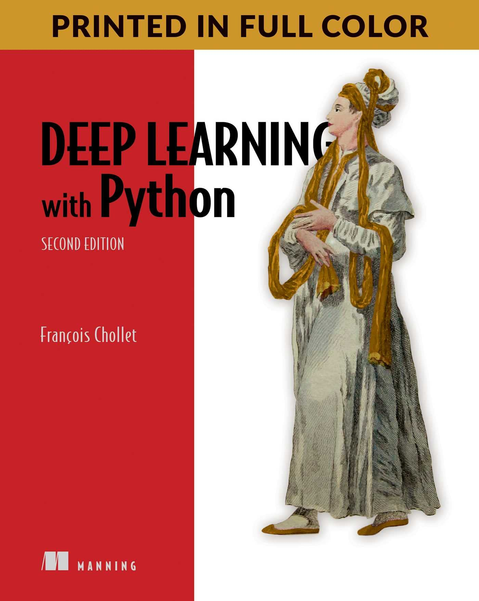
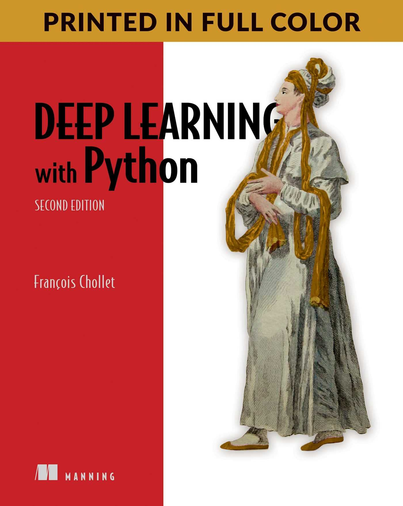

Machine Learning
References
Deep Learning with Python by François Chollet

Deep Learning by Ian Goodfellow, Yoshua Bengio, Aaron Courville
Deep Learning with Python by François Chollet

Deep Learning by Ian Goodfellow, Yoshua Bengio, Aaron Courville